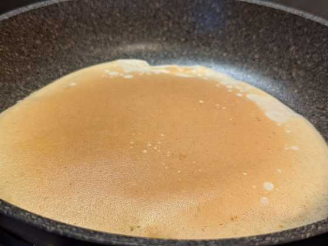
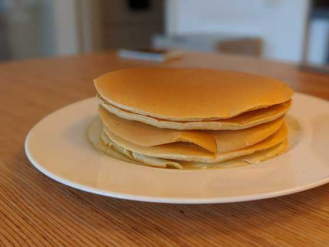
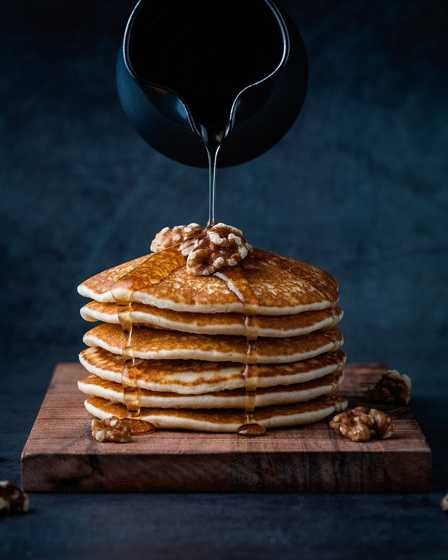
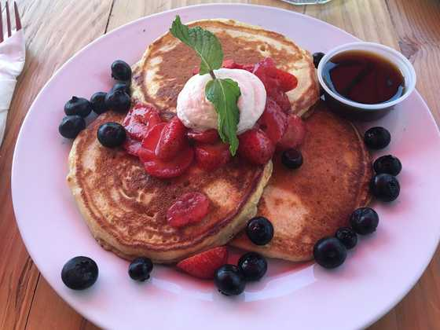
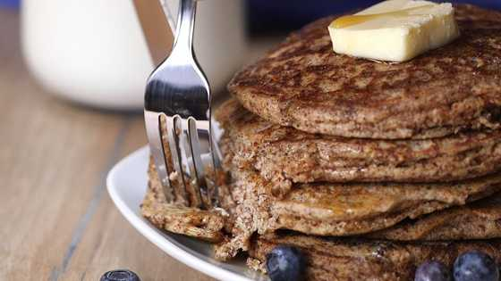
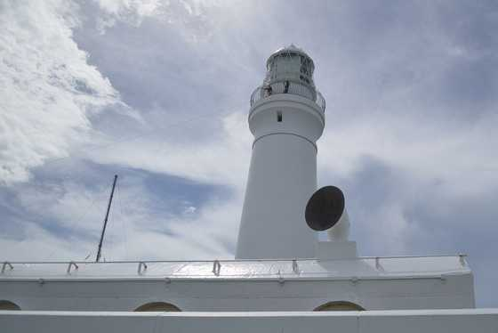
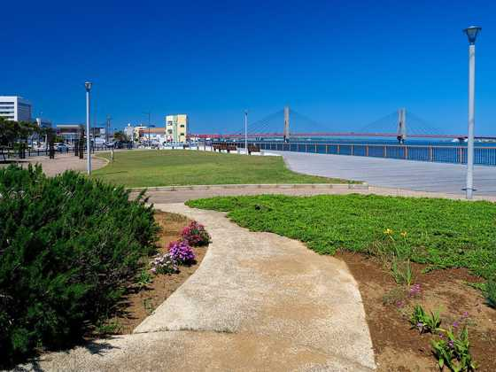
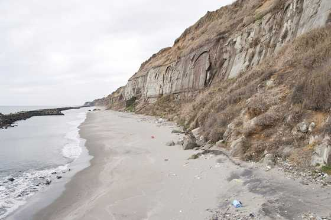
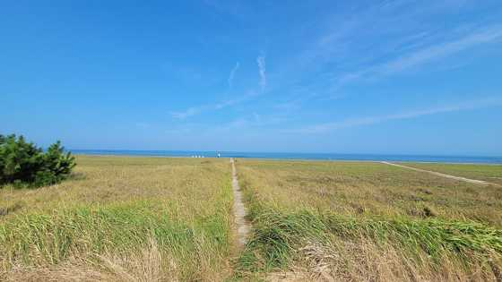
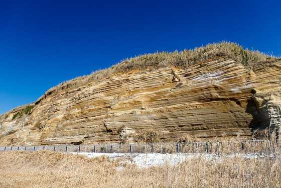

千葉県銚子市・観音駅のそば、階段を上った2階
ひとり分の小さな一枚を、
注文のたびに焼きあげる。
小さなパンケーキの店 Miyukicafe は、ふわふわのパンケーキを一枚ずつ焼いて出す、銚子の小さなカフェです。
お店の由来・想い
小さいからこそ、焼きたてを一枚ずつ。
店名のとおり「小さなパンケーキ」を看板にしたカフェです。Instagramでは、営業は火・水・木曜の10時から16時と案内されています。紹介ブログによると、カフェは階段を上がった2階にあり、軽く食べられる「ちょこっとパンケーキ」や、自家製寒天のあんみつ、お土産用のパンケーキ・クッキーもあるそうです。
情報源: Instagram @miyuki_cafe_pancake / 来店者のブログ / ヒトサラ
店名の意味やオーナーの想いは確認できていません。見出し・キャッチコピーの言い回しは制作側のイメージです。




口コミ
こんな声が届きそうです。
イメージ例
小さめのサイズなので、甘いものを少しだけ食べたい日にちょうどよかったです。
イメージ例
階段を上がった2階で、ゆっくりお茶の時間を過ごせました。焼きたてを待つ時間も楽しみのうちです。
イメージ例
電車で銚子に来た帰りに寄れる近さがうれしい。お土産のクッキーも選びたくなります。
上の口コミは制作側が作成したイメージ例で、実在のお客様の声ではありません。
アクセス
観音駅から歩いてすぐ。
| 住所 | 千葉県銚子市前宿町698 |
|---|---|
| 最寄り | 銚子電鉄 観音駅から徒歩約3分(ヒトサラ掲載情報) |
| 営業日・時間 | 火・水・木 10:00〜16:00(Instagramより。変更はInstagramの営業カレンダーでご確認ください) |
| 電話 | 準備中 |
| 定休日・駐車場 | 準備中 |
| @miyuki_cafe_pancake |





写真クレジット
写真はフリー素材です(Creative Commons ほか各ライセンス。詳細は各出典ページ)。
- pancake-stack.jpg: Shisma 「Pancake stack.jpg」 CC BY 4.0 出典(撮影地: 不明)
- pancake-table.jpg: Shisma 「Pancakes on table.jpg」 CC BY 4.0 出典(撮影地: 不明)
- pancake-syrup.jpg: Maffeth.opiana 「Pancake with maple syrup 1.jpg」 CC BY-SA 4.0 出典(撮影地: 不明)
- pancake-berries.jpg: Nightcrafter 「Pancakes with fruit.jpg」 CC BY-SA 4.0 出典(撮影地: 不明)
- pancake-fork.jpg: Shared Food 「Slicing Pancakes with Fork 374819.jpg」 CC0 出典(撮影地: 不明)
- pancake-plate.jpg: Shisma 「Pancake on plate.jpg」 CC BY 4.0 出典(撮影地: 不明)
- pancake-closeup.jpg: Shisma 「Pancakes on table 2.jpg」 CC BY 4.0 出典(撮影地: 不明)
- pancake-musashino.jpg: Douglas Perkins 「Pancakes in Musashino.jpg」 CC BY 4.0 出典(撮影地: 東京都武蔵野市)
- pancake-honey.jpg: Mae Mu 「Foodiesfeed.com pouring-honey-on-pancakes-with-walnuts.jpg」 CC0 出典(撮影地: 不明)
- pancake-pan.jpg: Shisma 「Pancake on pan.jpg」 CC BY 4.0 出典(撮影地: 不明)
- latte.jpg: Petr Kratochvil 「Coffee-latte - Petr Kratochvil.jpg」 CC0 出典(撮影地: 不明)
- bluecup.jpg: rawpixel.com rawpixel 「Blue coffee cup (Unsplash).jpg」 CC0 出典(撮影地: 不明)
- lighthouse.jpg: At by At 「Choshi Inubosaki Lighthouse 2013-09B.JPG」 CC BY-SA 3.0 出典(撮影地: 千葉県銚子市)
- choshi-park.jpg: くろふね 「銚子河岸公園20240503-P1041952.jpg」 CC BY 4.0 出典(撮影地: 千葉県銚子市)
- byobu-beach.jpg: Σ64 「Byobugaura 04.jpg」 CC BY 3.0 出典(撮影地: 千葉県銚子市)
- kimigahama.jpg: Aspere 「250821 Kimigahama Shiosai Park 61.jpg」 CC0 出典(撮影地: 千葉県銚子市)
- byobu-cliff.jpg: くろふね 「屏風ヶ浦（千葉県銚子市）20250222-IMG 3150.jpg」 CC BY 4.0 出典(撮影地: 千葉県銚子市)